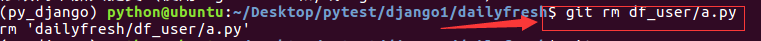
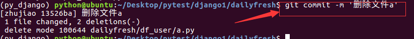

删除
- 在ide中将文件删除
- 从工作区到暂存区提交
git rm 文件名
- 从暂存区到仓库区提交
git commit -m '说明信息'
- 示例如下
- 在模块df_user下添加文件a.py，编写代码如下
if __name__=='__main__':
print 'test a'
- 将df_user/a.py的变更添加到暂存区，再提交到仓库区
git add df_user/a.py
git commit -m '创建文件a'
- 在ide中将df_user/a.py文件删除，然后在暂存区删除
git rm df_user/a.py

- 提交暂存区的记录到仓库区
git commit -m '删除文件a'

- 提示：删除的文件一样可以恢复，只需要先从仓库区到暂存区，再从暂存区到工作区